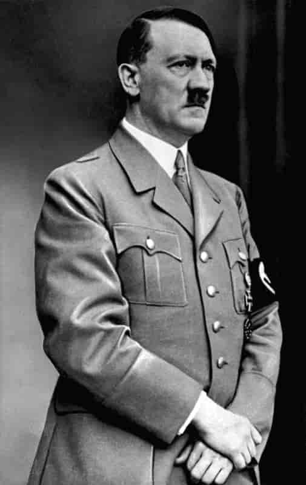
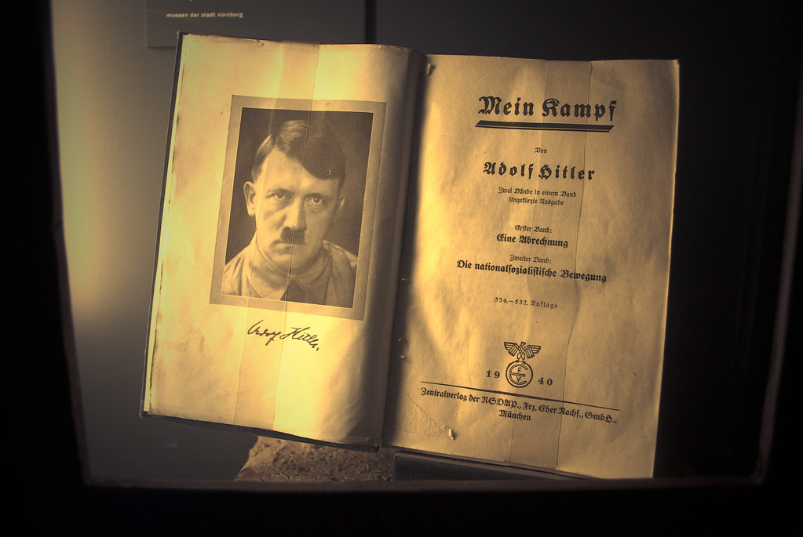

Vous devez surement vous demander, comment une guerre aussi énorme a elle commencé ? comment autant de pays s'en sont mêlé ? c'est ici que je vous explique ça.
Tout commence à la fin de la première guerre mondial, les allemends ont perdu, et ont du beaucoups payé. Beaucoups d'allemend sont devenu pauvre et le pays était en crise.
En 1924 un ancien soldat de la première guerre mondial ecrit un livre pendant qu'il est en prison, ce live très connu se prénome Mein Kampf.c'est à la fois un livre autobiographique et politique. Dans cet ouvrage, Hitler expose sa vision du monde raciste et antisémite, ainsi que ses ambitions belliqueuses pour l’Allemagne. Ce livre va beaucoup plaire au allemends qui sont déja désespéré. En 1933, Adolf Hitler arrive au pouvoir en exploitant l’idée que le chômage et la pauvreté en Allemagne sont de la faute des pays étrangers et des juifs. Il met en place une politique agressive pour contrôler d’autres territoires européens. Par exemple, il annexe l’Autriche en 1938. Pour lui, il est vital d’augmenter le territoire de l’Allemagne et d’effacer le souvenir de la défaite de la Première Guerre mondiale.
 Hitler est encouragé par le manque de réaction des grands pays européens, qui n’ont pas envie de faire la guerre. L’Allemagne noue également des alliances avec des gouvernements autoritaires en Italie et au Japon. Le 1er septembre 1939, continuant sa conquête d’autres territoires, l’Allemagne attaque son voisin, la Pologne. Pour défendre la Pologne, la France et le Royaume-Uni déclarent la guerre à l’Allemagne, le 3 septembre 1939. Le système des alliances va entraîner d’autres pays dans le conflit, qui dépasse les frontières de l’Europe pour devenir une guerre mondiale.